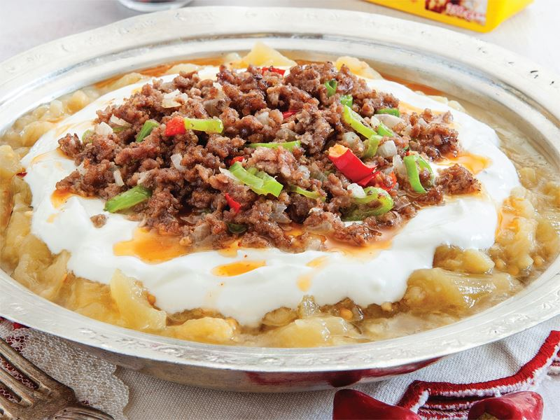

Ali Nazik
yamek olsun!
Patlıcan ve et ile hazırlanan Ali Nazik, Gaziantep yöresinin en sevilen tariflerinden biridir. Hakkında birçok rivayet bulunan Ali Nazik yemeğinin kökeni, Osmanlı'ya kadar dayanır. Rivayete göre 16. yüzyılda Yavuz Sultan Selim'in Antep yolculuğu ile başlar her şey. Bu yolculuktan haber alan halk, padişah için çeşit çeşit yemekler ve tatlılar hazırlar.
Hazırlanma süresi: 10dk
pişirme süresi:210dk
kaç kişilik: 2 kişilik
kalori: 1 porsiyon için 405/kcal
pişirme süresi:210dk
kaç kişilik: 2 kişilik
kalori: 1 porsiyon için 405/kcal
malzemeler
- 1 kg patlıcan
- 4 diş sarımsak
- 50 ml süzme yoğurt
- 30 g Bizim Yağ
- 900 g orta yağlı kıyma
- 1 tatlı kaşığı domates salçası
- 1 sivri biber
- 1 kırmızı kapya biberi
NASIL YAPILIR?
- Tereyağını derin bir tavanın içine alın. Sarımsağı ilave ederek hafifçe soteleyin.
- Ardından minik doğranmış kuşbaşı etleri ekleyerek karıştırın, kapağını kapatıp 6-7 dakika kısık ateşte suyunu salıp pişene kadar bırakın.
- Piştikten sonra salça, toz kırmızı biber ve tuz ekleyerek tatlandırın ve ocaktan alın.
- Közlenmiş patlıcanları kesme tahtasının üzerinde keskin bir bıçak yardımıyla dövün.
- Dövme aşamasında üzerine hafifçe tuz atın.
- İyice ezildiklerinde yoğurtla bir kasenin içinde birleştirin ve güzelce karıştırın.
- Servis tabağının içerisine yoğurtlu patlıcanlı karışımı alın. Ortasını çukurlaştırın. Hazırladığınız etleri de üzerine yerleştirin. Sosunu ilave ederek servis edin.